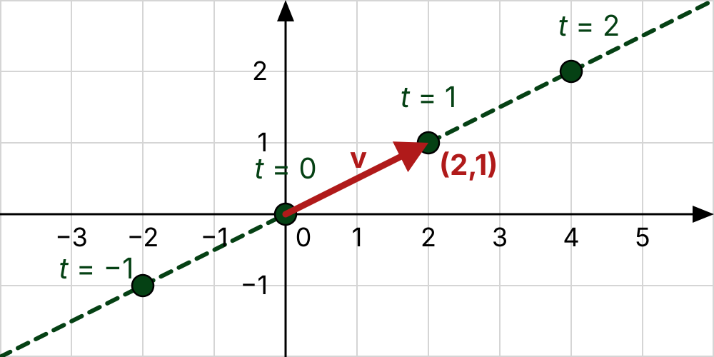
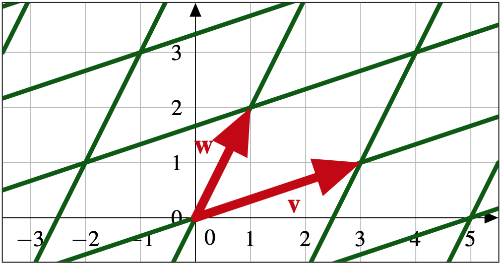
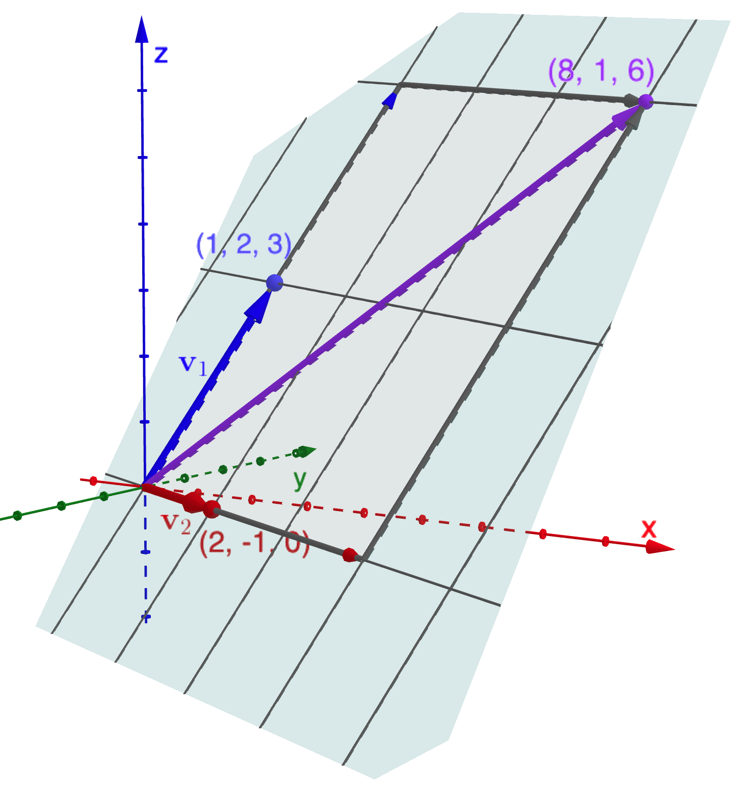
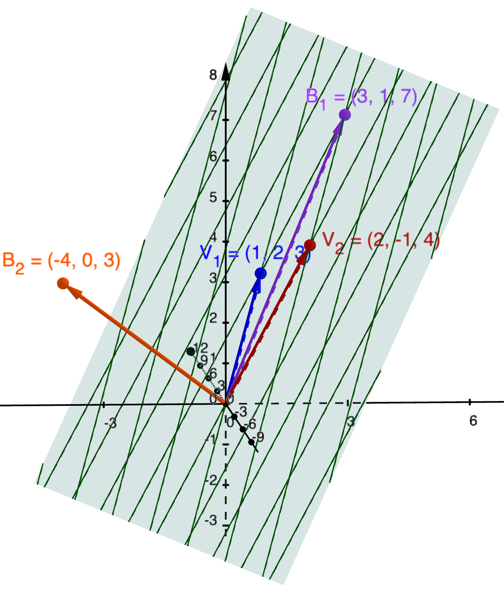

Lesson 2.4 The Set of All Linear Combination
In this lesson, we are interested in conceptualizing and symbolizing the set of all linear combinations we can make with a predetermined, fixed collection of vectors. This set of linear combinations is useful to consider in all the contexts in which we encounter vectors and linear combination. If I have 12 boxes of cereal on my shelf,
what are all the nutrition fact vectors I can make by mixing them? If my sound processor can make 400 digital pure tones,
what are all the sounds I can produce by mixing them? More generally, if I have a fixed collection of vectors,
what are all the linear combinations I can make with them?
Example 2.4.1. What can we make with one nonzero vector in the plane?
What can we make (using linear combinations) with
\(\vect{v}=\begin{bmatrix} 2\\1\end{bmatrix}\text{?}\) Geometrically, we get the line with parametric vector form:
\(\left\{t\begin{bmatrix}2\\1\end{bmatrix} \ | \ t\in \R\right\}\text{.}\) Observe our starting position is the zero vector (i.e. the origin).

A line in
\(\R^2\text{.}\)
Example 2.4.2. What can we make with two vectors in the plane?
What can we make (using linear combinations) with
\(\vect{v}=\begin{bmatrix} 3\\1\end{bmatrix}\) and
\(\vect{w}=\begin{bmatrix} 1\\2\end{bmatrix}\text{?}\) Algebraically, what vectors
\(s\begin{bmatrix}3\\1\end{bmatrix}+t\begin{bmatrix}1\\2\end{bmatrix}\) do we make as we vary
\(s,t\in\R\text{?}\) We can make anything in the plane!

A plane in
\(\R^2\text{.}\)
The collection of all possible linear combinations which can be made with
\(S\) is made precise by the notion of
span.
Definition 2.4.3. Span (the noun).
If \(S = \{\vect{v}_1,\ldots,\vect{v}_n\} \subset \R^m\text{,}\) then their span is the set of all linear combinations of \(\vect{v}_1, \ldots, \vect{v}_n\text{.}\) Symbolically,
\begin{equation*}
\spn(S) = \spn(\vect{v}_1,\ldots, \vect{v}_n) = \{ x_1\vect{v}_1+\cdots+x_n\vect{v}_n \ | \ x_1,\ldots, x_n\in \R\}.
\end{equation*}
The word “span” may seem unintuitive for you, so if you wish, via the metaphor of mixture, you can think of span as the
mixture set of
\(S\text{.}\) Note that even if
\(S\) is small,
\(\spn{S}\) is big! In fact, as long as
\(S\) contains a nonzero vector,
\(\spn(S)\) is an
infinite set.
Spans have very nice geometric interpretations. The span of one nonzero vector
\(\vect{v}\) is the
line, starting at the origin, with velocity
\(\vect{v}\text{:}\) \(\spn(\vect{v}) = \{t\vect{v}\ | \ t\in\R\}\) (see
Definition 2.3.8). The span of two nonzero, non-collinear vectors
\(\vect{v}\) and
\(\vect{w}\) is the
plane going through their tips and the origin. In symbols, we write this plane in parametric vector form:
\(\spn(\vect{v}, \vect{w}) = \{s\vect{v}+t\vect{w}\ | \ s,t\in\R\}\text{.}\)
Activity 2.4.4. Describing Span.
For each of the following sets of vectors, describe geometrically the associated span. Be sure to use geometric words.
-
\(\displaystyle S_1= \left\{ \begin{bmatrix} 1\\1\end{bmatrix}, \begin{bmatrix} -1\\1\end{bmatrix}\right\}\)
-
\(\displaystyle S_2= \left\{ \begin{bmatrix} 1\\1\end{bmatrix}, \begin{bmatrix} 2\\2\end{bmatrix}, \begin{bmatrix} 3\\3\end{bmatrix}\right\}\)
-
\(\displaystyle S_3= \left\{\begin{bmatrix} 0\\0\\0\\0\end{bmatrix}, \begin{bmatrix} 1\\2\\3\\4\end{bmatrix}\right\}\)
Example 2.4.5. What can we make with two vectors in Cartesian 3-Space?
If \(\vect{v}_1=\begin{bmatrix}1\\2\\3\end{bmatrix}\text{,}\) \(\vect{v}_2=\begin{bmatrix}2\\-1\\0\end{bmatrix}\text{,}\) and \(S=\{\vect{v}_1,\vect{v}_2\}\text{,}\) then \(\spn(S)\) is every possible mixture made with \(\vect{v}_1\) and \(\vect{v}_2\text{,}\) or using set notation,
\begin{equation*}
\spn(S) =\left\{s\begin{bmatrix}1\\2\\3\end{bmatrix}+t\begin{bmatrix}2\\-1\\0\end{bmatrix}\ \bigg| \ s,t\in \R\right\}.
\end{equation*}
Using the mixture parallelograms to visualize the mixtures, we see that \(\spn(S)\) will be the plane going through the three points: \((0,0,0)\text{,}\) \((1,2,3)\text{,}\) and \((2,-1,0)\text{,}\)

A plane in
\(\R^2\text{.}\)
Visualize the span of two vectors in
\(\R^3\) at GeoGebra ID:
axm8hsyg.
The algebraic notation of span is very compact and enables us to efficiently communicate our thoughts about linear combinations. It is therefore important that you practice symbolizing your thoughts with this compact notation and then practice interpreting in plain language such symbolic expressions.
Activity 2.4.6. Symbolizing with Span.
Symbolize each complete sentence using span.
-
Vector
\(\vect{w}\) is a linear combination of vectors
\(\vect{a}\) and
\(\vect{b}\text{.}\)
-
There is no way to write vector
\(\vect{f}\) as a linear combination of vectors
\(\vect{x}\text{,}\) \(\vect{y}\text{,}\) and
\(\vect{z}\text{.}\)
-
Everything I can make with vectors
\(\vect{m}\) and
\(\vect{n}\text{,}\) I can also make with vectors
\(\vect{p}\text{,}\) \(\vect{q}\text{,}\) and
\(\vect{r}\text{.}\)
Activity 2.4.7. Interpreting the Symbolism of Span.
For each, use complete sentences, using the language of mixture, to interpret the meaning of each algebraic expression.
-
\(\vect{w}\in \spn(\vect{v}_1,\vect{v}_2,\vect{v}_3)\text{.}\)
-
\(\spn(\vect{v}_1,\vect{v}_2,\vect{v}_3)=\R^2\text{.}\)
-
\(\vect{b}\notin \spn(\vect{v}_1,\vect{v}_2,\vect{v}_3)\text{.}\)
-
\(\spn(S) \subsetneq \R^m\text{.}\)
Proposition 2.4.8. Algebraic Properties of Span.
If
\(S=\{\vect{v}_1,\ldots,\vect{v}_n\}\subset \R^m\text{,}\) and
-
(Non-empty.) if
\(\vect{0}\in \R^m\) denotes the zero vector, then
\(\vect{0}\in \spn(S)\text{;}\)
-
(Closed under addition.) if
\(\vect{u},\vect{w}\in \spn(S)\text{,}\) then
\(\vect{u}+\vect{w}\in \spn(S)\text{;}\)
-
(Closed under scaling.) if
\(\vect{w}\in \spn(S)\) and
\(k\in \R\text{,}\) then
\(k\vect{w}\in \spn(S)\text{.}\)
Proof.
We must provide formal justification for each of the three properties.
I will begin with the first property. To show that \(\vect{0}\in \spn(S)\text{,}\) I must show that the zero vector is a linear combination of the vectors in \(S\text{.}\) This is easy to arrange, just take zero serving sizes of each vector! In symbols:
\begin{equation*}
\vect{0}=0\vect{v}_1+0\vect{v}_2+\cdots+ 0\vect{v}_n\in \spn(S).
\end{equation*}
Next, I will justify the second property. By assumption, there exists
\(x_1,\ldots, x_n\in \R\) and
\(y_1,\ldots, y_n\in \R\) such that
\(\vect{u}=x_1\vect{v}_1+\cdots +x_n\vect{v}_n\) and
\(\vect{w}=y_1\vect{v}_1+\cdots +y_n\vect{v}_n\text{.}\) So
\begin{align*}
\vect{u}+\vect{w} \amp =\left( x_1\vect{v}_1+\cdots +x_n\vect{v}_n \right)+ \left(y_1\vect{v}_1+\cdots +y_n\vect{v}_n\right) \amp \text{Definition of Span \ref{def-span}}\\
\amp = ( x_1+y_1)\vect{v}_1+\cdots +(x_n+y_n)\vect{v}_n \amp \text{Algebraic Properties "prop-fundamental_vector_props" LC1 and LC7.}
\end{align*}
From which we deduce
\(\vect{u}+\vect{w}\in \spn(S)\text{.}\)
All that is left justifying the third property. This is left to you in
Activity 2.4.9.
Activity 2.4.9. Practicing Formal Justification.
Carefully write down a formal justification for the third property of
Proposition 2.4.8. Be sure to carefully explain your reasoning and include references to all appropriate definitions and proven propositions. When done, share with the class.
We now come to
makeability. Given a collection of vectors
\(S=\{\vect{v}_1,\ldots, \vect{v}_n\}\subset \R^m\) and another vector
\(\vect{b}\in\R^m\text{,}\) we want to know if
\(\vect{b}\) can be “made” by mixing vectors in
\(S\text{.}\) In symbols, we can make
\(\vect{b}\) with
\(S\) if there exists scalars
\(x_1,\ldots, x_n\in \R\) such that
\(x_1\vect{v}_1+\cdots+x_n\vect{v}_n=\vect{b}\text{.}\) Put more compactly,
\(\vect{b}\) is
makeable with
\(S\) if
\(\vect{b}\in \spn(S)\text{.}\) There is no guarantee that
\(\vect{b}\) is makeable, in which case no such scalars exist.
Via the metaphor of cooking, given a certain collection of ingredients and a desired meal, makeability asks:
can we make the meal with our ingredients?
When we view vectors geometrically, given a plane in
\(\R^3\) and a point in
\(\R^3\text{,}\) makeability asks:
does the point lie on the plane?
If a vector is makeable with
\(S\text{,}\) then we usually also want to know how, i.e. what scalars allow us to make that vector.
Activity 2.4.11. Exploring Makability.
In each of the following parts, explore how you can make
\(\vect{b}\) from the given
\(S\text{.}\) Can you find a way to make
\(\vect{b}\) from
\(S\text{?}\) If so, are there multiple ways or is it unique? Explain.
-
Consider
\(S= \{\vect{v}_1,\vect{v}_2,\vect{v}_3\} = \left\{ \begin{bmatrix} 1\\0\end{bmatrix}, \begin{bmatrix} 0\\1\end{bmatrix}, \begin{bmatrix} 1\\1\end{bmatrix}\right\}\) and
\(\vect{b}=\begin{bmatrix} 2\\3\end{bmatrix}\text{.}\)
-
Consider
\(S= \{\vect{w}_1,\vect{w}_2\} = \left\{ \begin{bmatrix} 1\\0\end{bmatrix}, \begin{bmatrix} 5\\0\end{bmatrix}\right\}\) and
\(\vect{b}=\begin{bmatrix} 2\\3\end{bmatrix}\text{.}\)
Observe that a way to make
\(\vect{b}\) with S is precisely a servings vector (
Definition 2.1.22).
Definition 2.4.12. Solution Vectors.
If
\(S=\{\vect{v}_1, \ldots, \vect{v}_n\}\subset \R^m\text{,}\) \(\vect{b}\in \R^m\text{,}\) and
\(x_1,\ldots, x_n\in \R\) are such that
\(x_1\vect{v}_1+\cdots+x_n\vect{v}_n=\vect{b}\text{,}\) then the associated servings vector
\(\begin{bmatrix}x_1\\ \vdots\\ x_n\end{bmatrix}\) is a
solution vector for making
\(\vect{b}\) with
\(S\text{.}\)
If
\(S\) has
\(n\) vectors, then a solution vector for making
\(\vect{b}\) with
\(S\) has list-length
\(n\text{.}\)
Activity 2.4.13. Exploring Makeability Geometrically.
In this activity, you will use GeoGebra ID:
twf46ake to visualize and investigate makeability in
\(\R^3\text{.}\) Let
\(S= \{\vect{v}_1,\vect{v}_2\} = \left\{\begin{bmatrix}1\\2\\3\end{bmatrix}, \begin{bmatrix}2\\-1\\4\end{bmatrix}\right\}\text{,}\) \(\vect{b}_1=\begin{bmatrix}3\\1\\7\end{bmatrix}\text{,}\) and
\(\vect{b}_2=\begin{bmatrix}-4\\0\\3\end{bmatrix}\text{.}\)
-
Explore. Use the visual representations provided to decide if
\(\vect{b}_1\) and
\(\vect{b}_2\) can be made with
\(S\text{.}\) Clearly explain the visual feature(s) you are using to make your determinations.
-
Symbolize. For each makeable vector, write down the corresponding symbolic equation. (Perform the associated computation to verify you have indeed found a solution vector.)

Solution set in
\(\R^3\text{.}\)
Sometimes a single solution vector is sufficient. However, sometimes we want to collect all of them into a single set.
Definition 2.4.14. Solution Set.
If \(S=\{\vect{v}_1, \ldots, \vect{v}_n\}\subset \R^m\) and \(\vect{b}\in \R^m\) then the set of all solution vectors for making \(\vect{b}\) with \(S\) can be identified with a subset of \(\R^n\) called the solution set for making \(\vect{b}\) with \(S\text{.}\) In symbols,
\begin{equation*}
\Sol(S,\vect{b})=\left\{\begin{bmatrix}x_1\\ \vdots \\ x_n \end{bmatrix} \in \R^n \ \bigg| \ x_1\vect{v}_1+\cdots+x_n\vect{v}_n=\vect{b}\right\}.
\end{equation*}
If
\(\vect{b}\) is not makeable with
\(S\text{,}\) then the solution set is
empty, which we denote
\(\Sol(S,\vect{b})=\varnothing\text{.}\)
Activity 2.4.15. Symbolizing with Solution Sets.
Symbolize each expression using solution sets and set notation.
-
\(5\vect{a}+7\vect{b}+2\vect{c}=\vect{d}\text{.}\)
-
\(3\vect{v}-\vect{w}\ne \vect{u}\text{.}\)
-
There is no way to make
\(\vect{m}\) with vectors
\(\vect{p}\text{,}\) \(\vect{q}\text{,}\) and
\(\vect{r}\text{.}\)
Activity 2.4.16. Interpreting the Symbolism of Solution Sets.
Use complete sentences and the language of mixture to interpret the meaning of each algebraic expression.
-
\(\Sol(\{\vect{v},\vect{u}\},\vect{w})\ne \varnothing\text{.}\)
-
\(\{\vect{0}\} \subset \Sol(\{\vect{p},\vect{q}\},\vect{0})\text{.}\)
-
\(\begin{bmatrix}1\\-1 \end{bmatrix} \notin \Sol(\{\vect{e},\vect{f}\},\vect{h})\text{.}\)
Solution sets are central objects in linear algebra and we will continue to deepen our understanding and develop tools for computing them in the lessons that come.